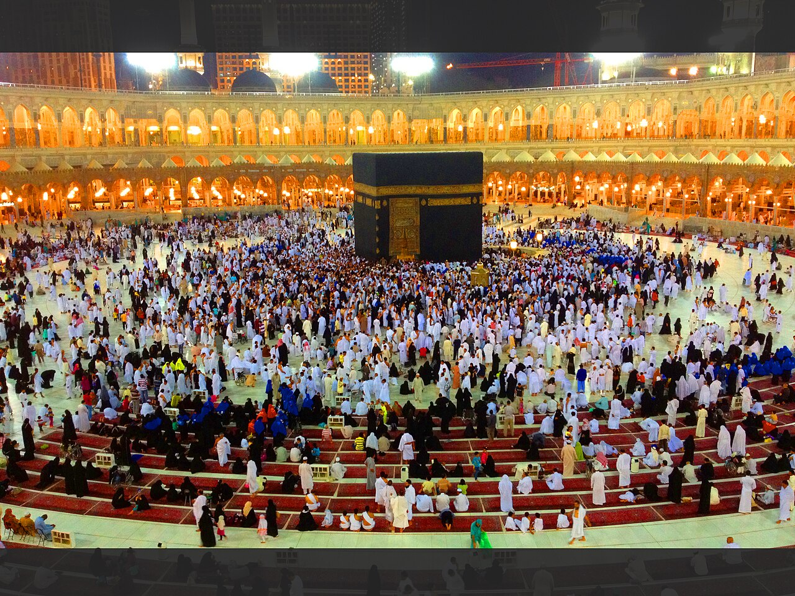
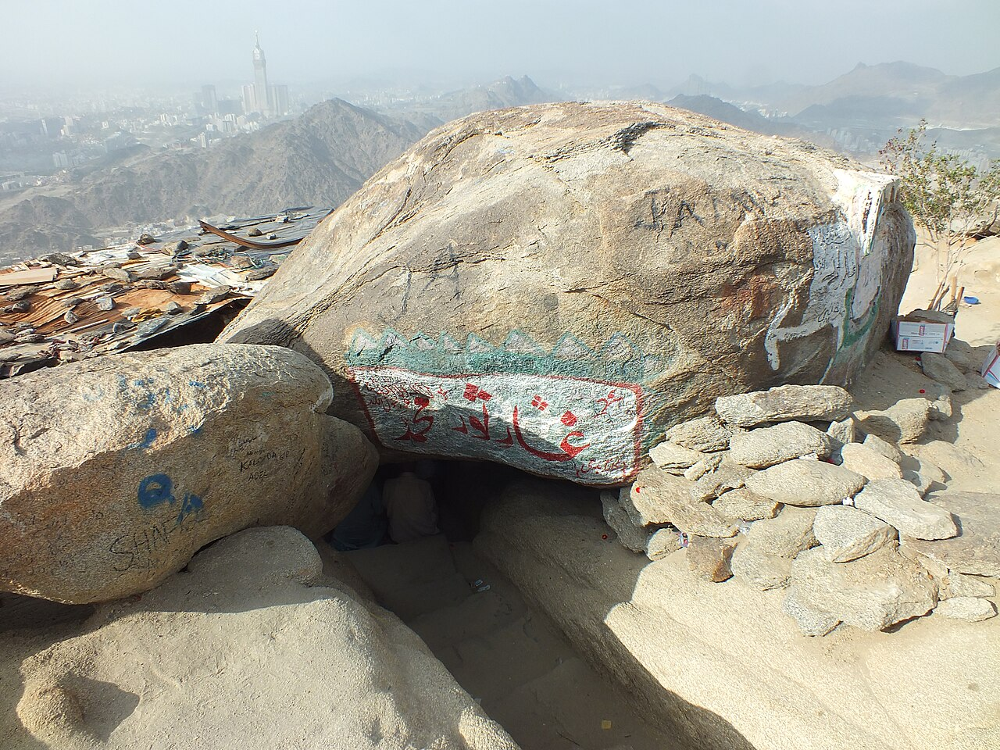
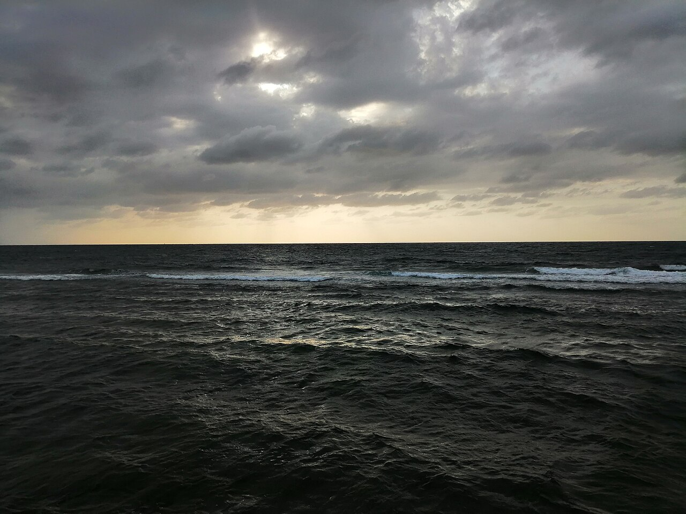
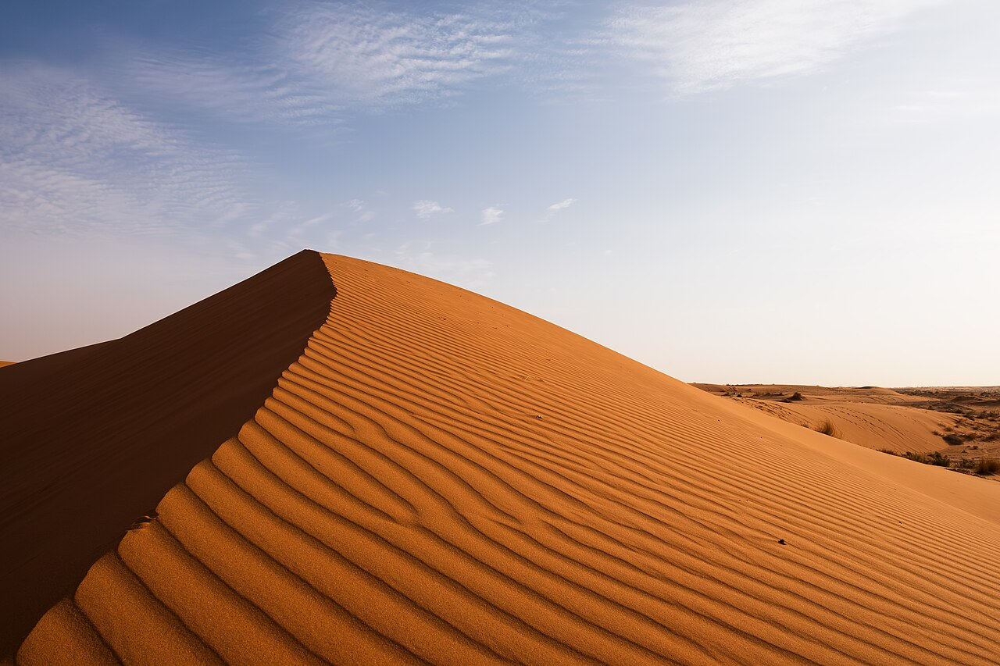
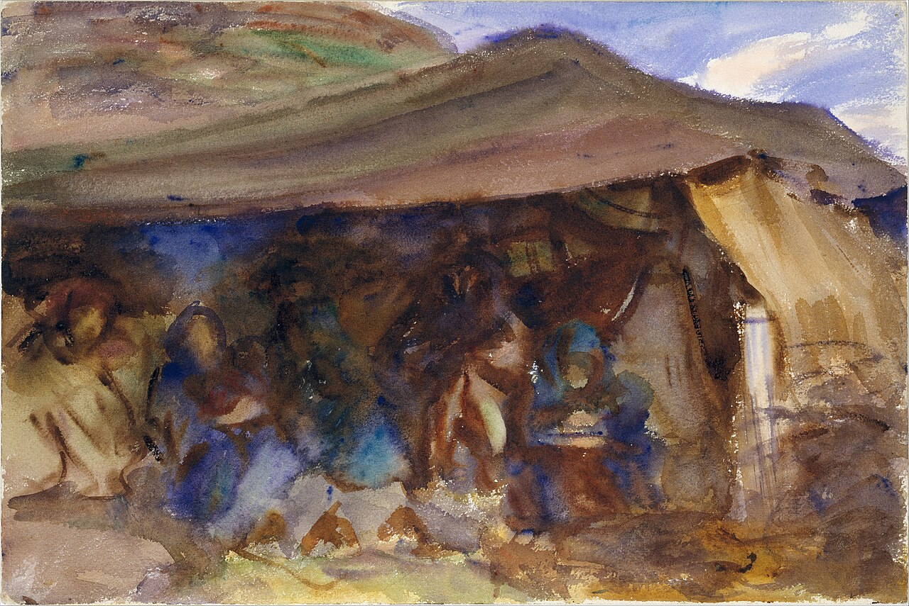
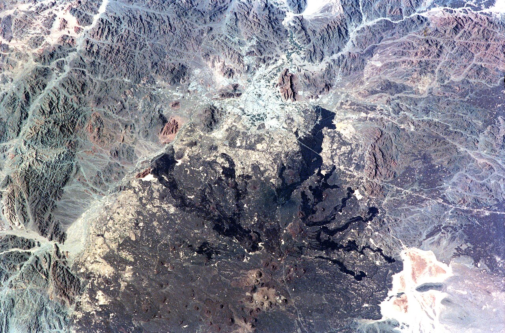
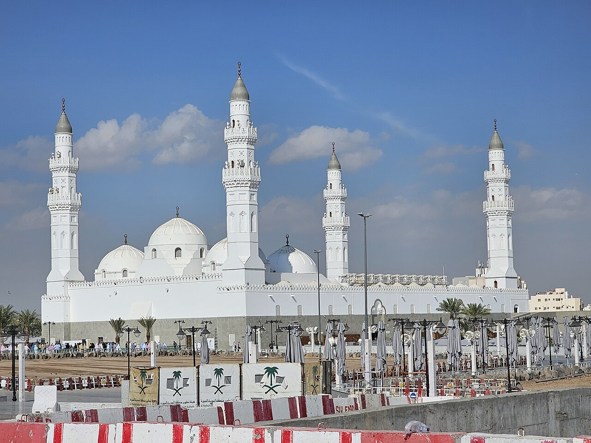
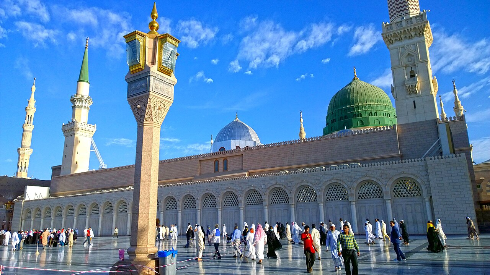
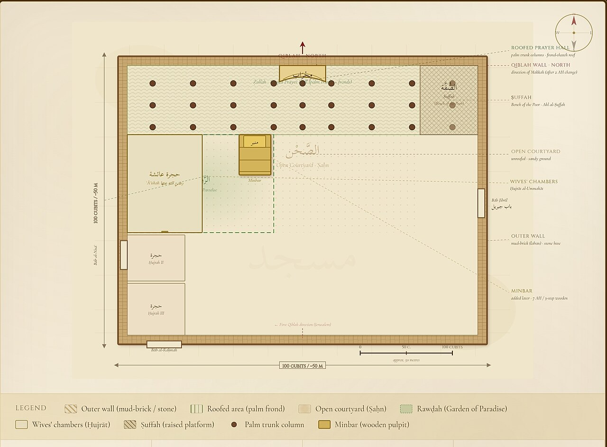

مكة المكرمةليلة الخروج
ثلاث عشرة سنة والنبي ﷺ يدعو قومه في مكة إلى عبادة الله وحده، حتى عزمت المدينة التي نشأ فيها على قتله.
اشتدّ أذى قريش للمسلمين، فخرجوا إلى يثرب أفواجًا وفرادى، إلى مدينة النخيل التي بايع أهلها رسول الله ﷺ عند العقبة على أن يمنعوه مما يمنعون منه أنفسهم وأهليهم. ولم يبقَ في مكة إلا النبي ﷺ وأبو بكر وعلي، ومن حبسه الضعف أو العذاب.
واجتمع سادة قريش في دار الندوة، فاستقرّ رأيهم على أن يأخذوا من كل قبيلة شابًّا جلدًا، فيضربوه ضربة رجل واحد، فيتفرّق دمه في القبائل فلا يقدر بنو عبد مناف على حربهم جميعًا. وفي تلك الليلة أحاطوا ببيته ينتظرون خروجه.

.jpg){kind=link}
أمر النبي ﷺ عليًّا أن ينام في فراشه ويتسجّى ببُرده الأخضر، وأن يتخلّف بعده ليردّ الودائع التي كان أهل مكة، حتى أعداؤه، يحفظونها عنده. ثم خرج من بين الرجال الواقفين على بابه وهو يتلو: ﴿وَجَعَلْنَا مِن بَيْنِ أَيْدِيهِمْ سَدًّا وَمِنْ خَلْفِهِمْ سَدًّا فَأَغْشَيْنَاهُمْ فَهُمْ لَا يُبْصِرُونَ﴾، فأخذ الله أبصارهم عنه فلم يره منهم أحد.
ومضى إلى دار أبي بكر، فبكى أبو بكر من الفرح حين علم أنه سيصحبه في الهجرة، وقد أعدّ لذلك راحلتين منذ أشهر. وخرجا من خوخة في ظهر الدار، ولم يسلكا طريق الشمال إلى يثرب، بل اتجها جنوبًا إلى الجبال. ووقف النبي ﷺ على مشارف مكة فقال: «والله إنكِ لخيرُ أرض الله، وأحبُّ أرض الله إلى الله، ولولا أني أُخرجت منكِ ما خرجت».
غار ثورثانيَ اثنين
في جنوب مكة يرتفع جبل ثور، وعرًا كثير الصخور، وقرب قمته غار ضيّق، فيه اختبأ الصاحبان ثلاث ليال.
دخل أبو بكر الغار أولًا ليتحقق أنه لا شيء فيه يؤذي رسول الله ﷺ، وسدّ ما فيه من جحور بقطع من ثوبه. ولما أصبحت قريش ووجدت عليًّا في الفراش جُنّ جنونها، فبثّت الرجال في كل طريق، وأرسلت قصّاصي الأثر في الجبال، وجعلت مئة ناقة لمن يأتي بكل واحد منهما حيًّا أو ميتًا.


وبلغ الطلب باب الغار حتى رأى أبو بكر أقدامهم، فقال: يا رسول الله، لو أن أحدهم نظر تحت قدميه لأبصرنا. فقال ﷺ مطمئنًا: «ما ظنك يا أبا بكر باثنين الله ثالثهما؟». فانصرفوا، وأنزل الله: ﴿ثَانِيَ اثْنَيْنِ إِذْ هُمَا فِي الْغَارِ إِذْ يَقُولُ لِصَاحِبِهِ لَا تَحْزَنْ إِنَّ اللَّهَ مَعَنَا﴾.
وكان آل أبي بكر أمناء السرّ: ابنه عبد الله يمكث نهاره في قريش يسمع ما يدبّرون، ثم يصعد إلى الغار ليلًا بالخبر. ومولاه عامر بن فهيرة يرعى الغنم قريبًا من الغار فيسقيهما من لبنها، ثم يسوقها على أثر عبد الله كل صباح فيمحوه.
وكانت ابنته أسماء تحمل إليهما الطعام، فلم تجد ما تربط به السُّفرة، فشقّت نطاقها نصفين وربطتها بأحدهما، فسُمّيت «ذات النطاقين».
ما ظنك يا أبا بكر باثنين الله ثالثهما؟ — صحيح البخاري
وبعد ثلاث ليال خفّ الطلب، وجاء الدليل عبد الله بن أُرَيْقِط الدِّيلي بالراحلتين كما وُعد، وكان على دين قومه لكنه أمين خبير بالطرق. فانطلقوا ومعهم عامر بن فهيرة، وسلك بهم الدليل غير الطرق التي ترصدها قريش: غربًا نحو البحر الأحمر.
عُسفانطريق الساحل
ما كان أحد يظن أن طريدين يقصدان الشمال يسلكان طريق البحر الطويل.
نزل بهم الدليل إلى الساحل أسفل عسفان، ثم انعطف شمالًا في سهل تهامة الحارّ الممتد بين الجبال والبحر. فقطعوا الطريق قرب عسفان، ومرّوا بأسفل أَمَج، ومضوا يسرون الليل ويستريحون في شدة الهاجرة.


رحلة تزيد على أربعمئة كيلومتر في حرّ آخر الصيف، وعلى رأسيهما جائزة. وكان أبو بكر يمشي تارة أمام النبي ﷺ وتارة خلفه، وعن يمينه وعن شماله، لا يأمن أن يأتيه الأذى من جهة.
قُدَيدالفارس الذي عاد
في ديار بني مُدلج قرب قديد، سمع رجل بركبٍ على طريق الساحل، فرأى فيه مئة ناقة.
قال سراقة بن مالك لأهل مجلسه إنهم غير من يطلبون، ثم تسلّل فأخذ سلاحه وركب فرسه في إثرهم. فلما دنا منهم عثرت به فرسه فسقط عنها، ثم ركب فعثرت، فلما سمع قراءة النبي ﷺ ساخت يدا فرسه في الأرض حتى بلغتا الركبتين، وارتفع لأثرهما غبار كالدخان.


فأيقن سراقة أن القوم ممنوعون، فناداهم بالأمان، وعرض عليهم الزاد والمتاع، ووعدهم أن يردّ عنهم كل من يلقاه في الطلب. وسأل أن يُكتب له كتاب أمان، فكتبه له عامر بن فهيرة في رقعة من أَدَم. وتذكر الروايات أن النبي ﷺ قال له: كيف بك إذا لبست سواري كسرى؟ فلبسهما بعد سنين في خلافة عمر.
وفي قديد أيضًا مرّوا بخيمة أم معبد الخزاعية، وكانت امرأة كريمة تُطعم وتسقي من يمرّ بها. وكان القوم مُسنتين، ولم يكن عندها ما تقدّمه، وفي جانب الخيمة شاة خلّفها الجهد عن الغنم، ما بها من لبن.


فاستأذنها النبي ﷺ أن يحلبها، فمسح بيده ضرعها وسمّى الله، فدرّت حتى امتلأ الإناء، فشربوا حتى رووا، ثم حلب ثانيًا وترك الإناء ملآن لأهل البيت. فلما رجع زوجها أبو معبد وسأل عن اللبن، وصفت له ضيفها وصفًا ما زال يُروى إلى اليوم من أجمل ما وُصف به رسول الله ﷺ.
ومن قديد قطع الدليل الطريق وصعد في الجبال، فمرّ بالخرّار، وثنيّة المرة، ولِقْف، ومدلجة، حتى العَرْج.
العَرْجبين الشعاب والثنايا
وكانت المرحلة الأخيرة بين أودية الحجاز وثناياه، عبر ثنية العائر، ثم بطن رِئم.
وقد بلغ أهلَ يثرب خروجُ النبي ﷺ من مكة، فكان المسلمون من المهاجرين والأنصار يغدون كل صباح إلى الحرّة السوداء على طرف المدينة، فيرقبون طريق الجنوب حتى يردّهم حرّ الظهيرة.


وفي يوم، بعد أن انقلبوا إلى بيوتهم، أوفى رجل على أُطُم من آطامهم فرأى رجالًا مبيَّضين يزول بهم السراب، فصاح بأعلى صوته: يا معاشر العرب، هذا جدّكم الذي تنتظرون. فثار المسلمون إلى السلاح، وتلقّوه بظهر الحرّة.
قُباءأول مسجد
وصل يوم الإثنين من شهر ربيع الأول، في سبتمبر سنة ٦٢٢م، إلى قباء، قرية بني عمرو بن عوف في جنوب يثرب.
فأقام فيهم أيامًا نازلًا على كلثوم بن الهِدْم، وأسّس مسجدًا كان يحمل حجارته بيده مع أصحابه، فكان أول مسجد بُني في الإسلام، وهو الذي يذكر كثير من العلماء أن الله وصفه بقوله: ﴿لَمَسْجِدٌ أُسِّسَ عَلَى التَّقْوَىٰ مِنْ أَوَّلِ يَوْمٍ﴾.

.jpg){kind=link}
وفي قباء لحق بهم علي رضي الله عنه، بعد أن ردّ الودائع إلى أهلها في مكة، وقطع الطريق كلها وحده ماشيًا، يسير الليل ويختفي النهار.
ويوم الجمعة خرج النبي ﷺ من قباء نحو قلب المدينة، فأدركته الصلاة في بني سالم بن عوف في بطن وادي رانوناء، فصلّى بهم أول جمعة في الإسلام وخطبهم. وفي ذلك الموضع اليوم مسجد الجمعة.
ثم سار إلى يثرب، والناس على الطرقات وفوق السطوح، والغلمان والخدم يتصايحون في الطرق: جاء رسول الله. وتذكر الروايات أنهم استقبلوه بالنشيد المعروف «طلع البدر علينا».
المدينة المنورةمدينة النبي ﷺ
كل بيت يتمنّى أن ينزل عنده، فكانوا يأخذون بزمام ناقته واحدًا بعد واحد.
فقال عن ناقته القصواء: «دعوها فإنها مأمورة». فمضت في المدينة حتى بركت في مِربَد لغلامين يتيمين هما سهل وسهيل، فأبى النبي ﷺ إلا أن يشتريه منهما، وبنى فيه مسجده، المسجد النبوي، يعمل فيه بيده.


.jpg){kind=link}

ونزل عند أبي أيوب الأنصاري حتى بُنيت حجراته بجوار المسجد، ثم آخى بين المهاجرين والأنصار، فقاسم كل بيت من أهل المدينة أخاه المهاجر داره وماله. وصارت الجماعة المستضعفة أمة.
السنة الأولى للهجرةالعام الذي بدأ به التاريخ
لم تكن الهجرة فرارًا، بل كانت اللحظة التي صار فيها للمسلمين وطن وجماعة، وتغيّر بها مجرى التاريخ. وبعد نحو سبع عشرة سنة، حين أراد الخليفة عمر بن الخطاب والصحابة أن يجعلوا للمسلمين تاريخًا، لم يختاروا مولد النبي ﷺ ولا بدء الوحي، بل اختاروا عام الهجرة.
ومنذ ذلك اليوم تُعدّ السنون من هذه الرحلة: من بلد أخرجه، إلى غار في جبل، إلى طريق خفيّ على البحر، إلى مدينة فتحت له أبوابها وقلوبها.
والمهاجر من هجر ما نهى الله عنه — صحيح البخاري